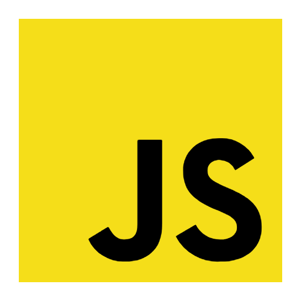
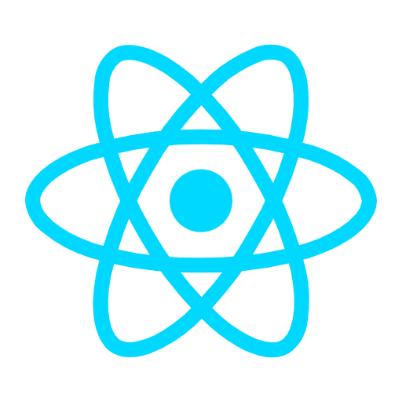
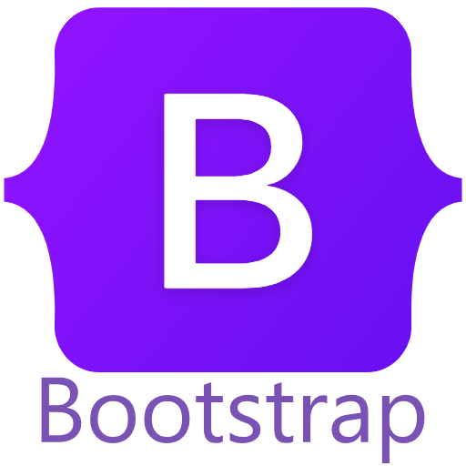
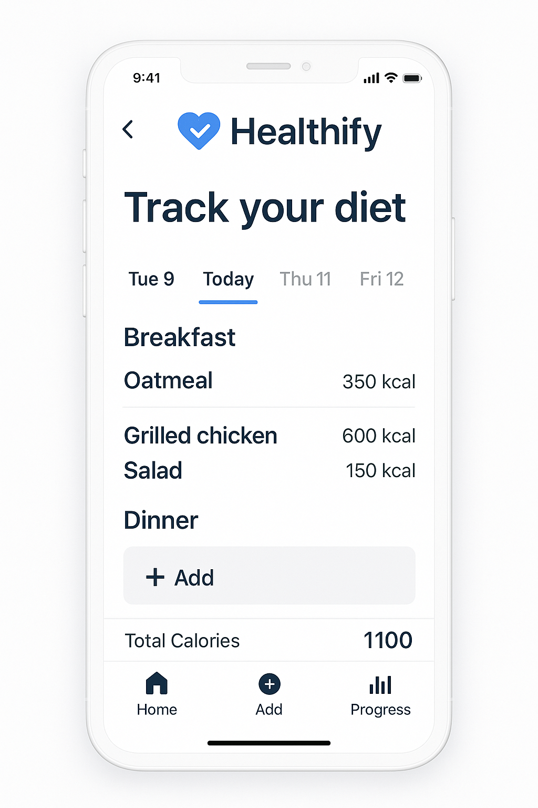

Crypto Sentiment Analysis
Made with:



Cryptocurrency sentiment analysis website based on Twitter posts. Users can see the overall sentiment (positive, negative, or neutral) of various cryptocurrencies, along with keyword trends and average sentiment scores.
architecture leveraging ElastiCache, S3, EC2, and auto-scaling on AWS.
